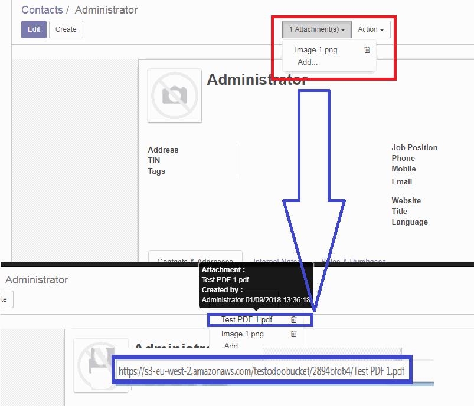
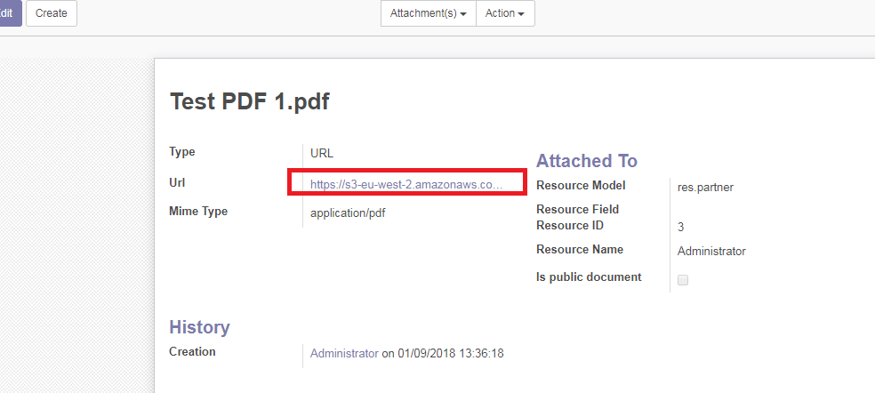
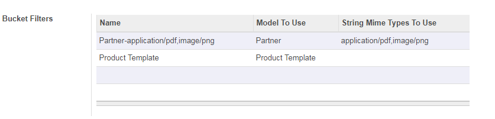

REAL - S3 Attachment Storage
Upload attachments on any S3 compatible system. Amazon, Owncloud etc.
Key features:
-
Upload to ANY S3 API compatible storage system. (Amazon, Owncloud etc)
-
Super easy to configure
-
REAL TIME - No sync!
-
Use S3 External Storage to store your documents
-
Ability to filter on Model/Mime type
-
Multiple connections support for multiple buckets.
-
Preserves File Extensions so files are READABLE after upload.
-
Deletes files from S3 when the attachment is deleted from Odoo.
-
Allows migration of existing documents to S3.
-
Full setup instructions & tutorial please see: here
-
Tested with Odoo 11 Enterprise AND Community
-
Requires python Extension Boto3 (Can install by pip install boto3).
How does it work??

Files are uploaded as normal in Odoo. Odoo then automatically uploads these files into S3.
In the picture above a file is being added "Test PDF 1.pdf".
The file is immediately uploaded to S3 and the URL reflects the S3 link.
See below for how this looks in the DB Attachments screen.

What files types does it work with?
Any file extensions you want can be uploaded to S3, you decide on which ones you want to upload (or take them all) and the system will upload them for you. Below is an example showing the 'Bucket Filters' that let you state exactly what Mime Types and which models you wish to upload files for.

For a full list of Mime Types please see here
Full setup instructions & tutorial please see: here